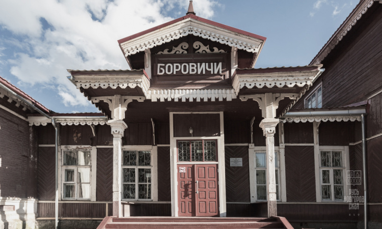
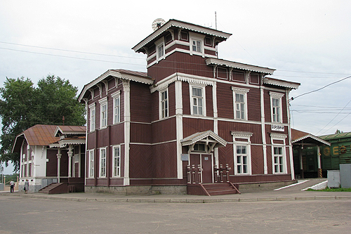
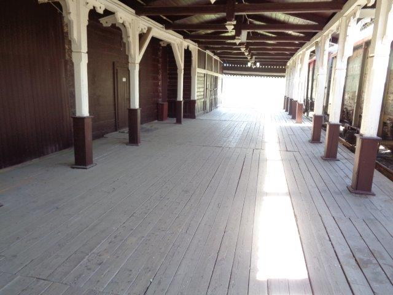

Деревянный вокзал



Деревянное двухэтажное здание вокзала прямоугольной формы, крыша сложной формы с вставками треугольной формы, покрыта металлочерепицей, окна прямоугольные, имеются три входа на три стороны, есть подвальное помещение, окрашено в коричневый цвет.
Основные ссылки и контакты:
Номер телефона: 8 (800) 775-00-00